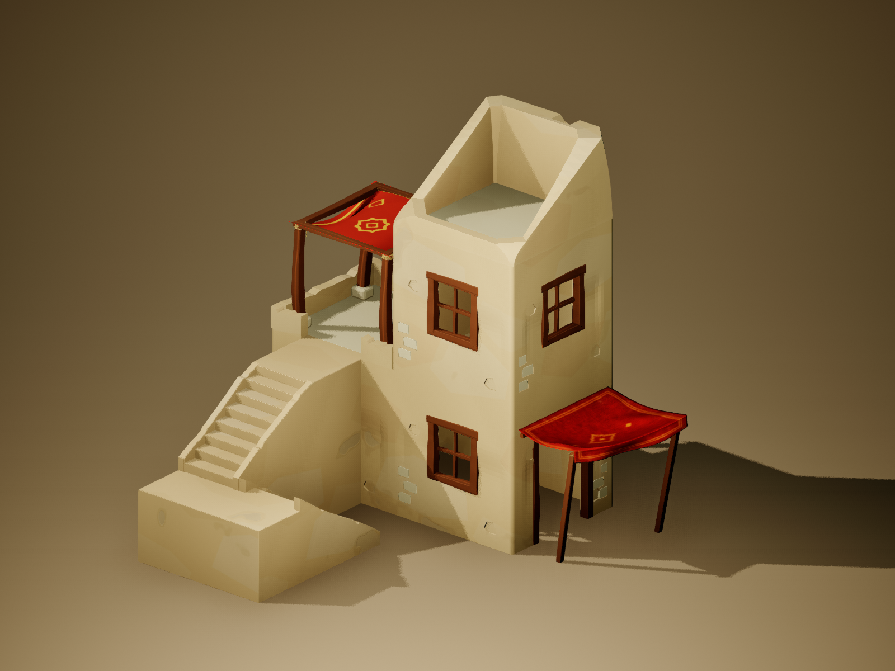
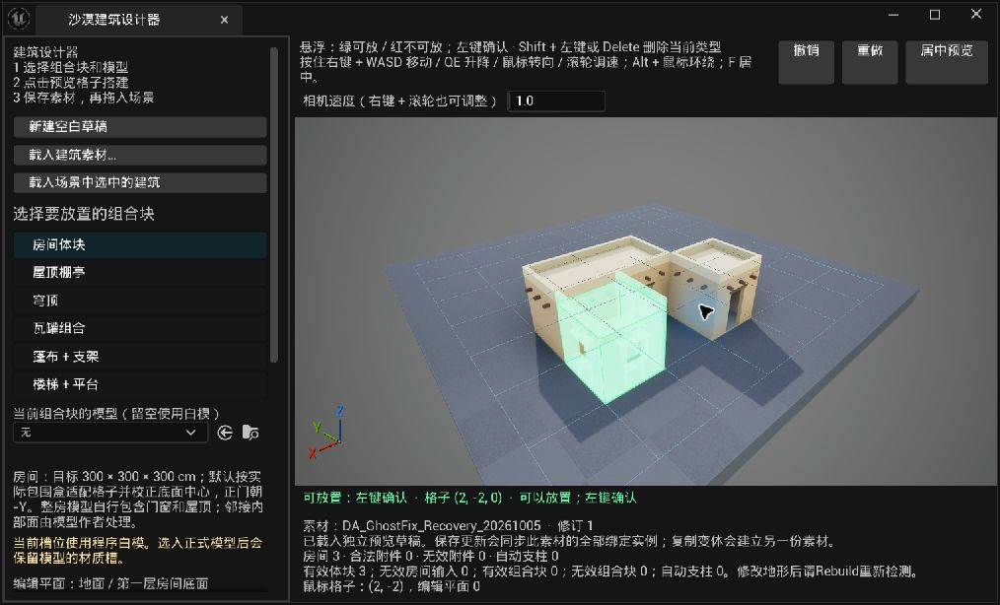
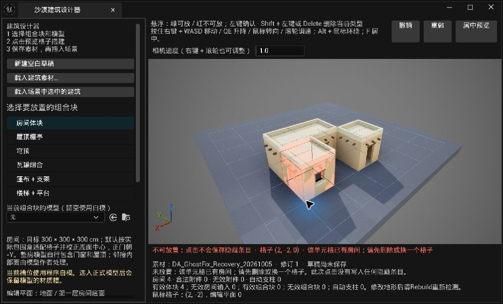
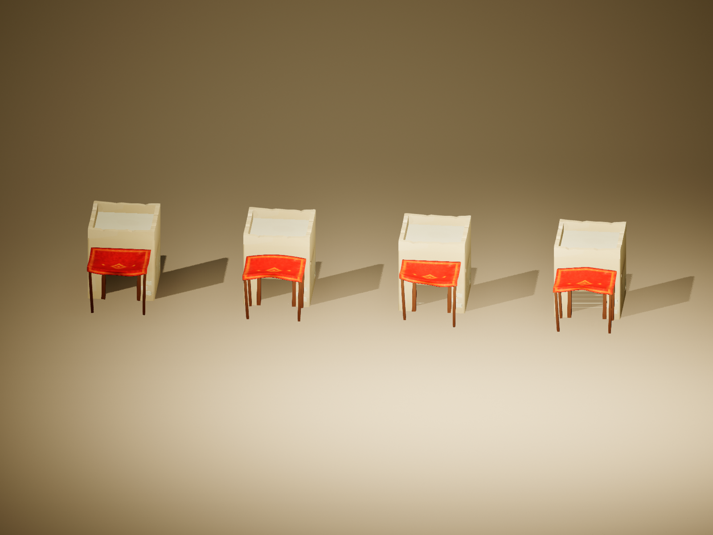
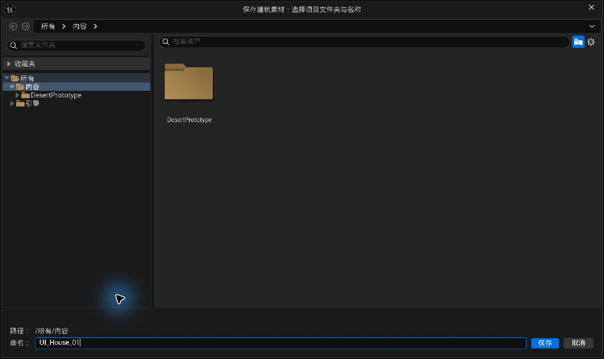

从模块到可编辑建筑
介绍、安装、操作、规则与美术接口，整合为一份可随仓库阅读的中文手册。
图像与验证边界：本页两张当前公开套件效果图由 Unreal SceneCapture 渲染，不是插件 UI 操作截图；另三张历史真实 UI 实拍分别标明 2026-10-05／0.4.1 或 V3，旧侧栏、美术和保存位置不代表当前 0.4.7 完整界面。模块独立小预览和 Buildings/Resources 收纳以当前文字说明为准。公开样例 204/204 项准备检查与原开发配置 264/264 项保存流程检查分别说明；新项目、真实角色／导航、游戏打包与性能仍需单独验收。
可编辑源：README.md
Desert Building Lab · 沙漠建筑实验室
用于 Unreal Engine 编辑阶段的模块化建筑工具。先选择房间、楼梯、篷布、屋顶和装饰组合，在独立三维视口里点击格子搭建，再保存为可重复使用、可继续修改的建筑素材。
这套工具从风格化沙漠建筑的制作需求出发：艺术家负责模块造型与材质，插件负责邻接、承托、通路、占用、保存和实例同步。同一套生成逻辑可以接入不同的模型与材质。
最初灵感来源：Oskar Stålberg 的交互房屋实验 Brick Block（原始 house 页面）。本项目受到“点击增减单元格、邻接结果随布局自动更新”的操作方式启发，再针对 Unreal 编辑阶段的场景制作扩展支撑、楼梯、附件和资产管理。当前 Unreal 插件与模块规则由本项目独立编写，公开仓库未移植或收录原作代码与美术资源。
当前版本：0.4.7-assets.1。开发与实际编译验证环境：Unreal Engine 5.8.2 / Windows 64 位。这是持续迭代的实验工具，当前未建立其他引擎版本兼容矩阵。

上图由公开套件在 Unreal 中实际生成并通过 SceneCapture 渲染。它展示了房间、支撑楼梯、屋顶棚亭、墙冠和篷布组合；不是设计器界面截图。制作该图的脚本见 Tools/render_example.py，不会保存或改写 Unreal 的建筑素材。
可以做什么
- 在预览视口里逐格添加房间，按邻接关系生成外墙、门窗、屋顶和女儿墙。
- 添加贴墙直梯、L 形双跑梯、U 形双跑梯，以及完整的“篷布＋支架”组合变体。
- 放置屋顶棚亭、穹顶、斜顶墙冠、瓦罐组和建筑外围散石组。
- 悬浮时显示候选模型和红／绿放置反馈；无效点击不会存下一件以后突然出现的隐藏模块。
- 检查空间冲突、楼梯通路、屋顶承托和地面支撑；悬空房间可自动生成支柱。
- 为每个房间设置门的朝向、是否有门、四面的窗位；为瓦罐组设置自动靠墙或九方向排布。
- 保存建筑数据、独立风格配置和可拖入场景的蓝图；修改素材时同步关联实例；另存可以创建布局变体。
- 在用户选择的目录下分类收纳模型、材质、材质函数和贴图依赖。
- 输出独立的地基与楼层组件，提供整栋／单层淡化接口，便于连接已有的遮挡检测组件。
真实编辑器操作（历史实拍）
以下截图来自 2026-10-05、插件 0.4.1 的真实 Unreal 编辑器操作，用来说明“选择模块 → 悬浮检查 → 左键确认”以及冲突反馈。当前 0.4.7-assets.1 已增加模块独立小预览和新的 Buildings/Resources 资源收纳流程；图中的旧侧栏、占位美术和保存入口不代表当前完整界面。上方与文末的公开套件效果图则是当前 SceneCapture 渲染，两类图片用途不同。

2026-10-05 / 0.4.1 历史 UI 实拍：绿色候选表示规则允许放置，点击前可以查看位置；正式生成和临时预览分开处理。

2026-10-05 / 0.4.1 历史 UI 实拍：红色候选与状态文字说明冲突，无效点击不会保存隐藏模块。当前操作步骤以操作指南为准。
从哪里开始
| 想做的事 | 文档 |
|---|---|
| 安装插件，做并保存第一栋建筑 | 操作指南 |
| 理解格子、邻接、支撑和放置校验 | 生成逻辑与代码结构 |
| 接入自己的 Blender／Painter 资源 | 模型、材质与槽位接入规范 |
| 理解保存目录、共享资源、更新和复制变体 | 资产保存与项目管理 |
| 离线查看整合图文手册 | 公开插件操作手册 HTML（下载仓库后用浏览器打开） |
| 确认公开代码与美术文件的使用许可 | 代码许可 · 美术资源许可说明 · 制作来源与发布范围 |
安装概要
本仓库根目录是一份插件。把它放到项目的以下位置，确保描述文件没有被多套一层目录：
YourProject/
├─ YourProject.uproject
└─ Plugins/
└─ DesertBuildingLab/
├─ DesertBuildingLab.uplugin
├─ Source/
│ ├─ DesertBuildingLab/
│ └─ DesertBuildingLabEditor/
└─ Docs/使用源码版需要项目能够编译 C++ 插件。重新生成项目文件、编译项目的 Editor 目标后，在虚幻中启用 Desert Building Lab。打开菜单 工具 → 沙漠建筑工具 → 打开建筑设计器（点击格子搭建）。完整步骤和无默认美术资源时的配置见操作指南。
仓库同时提供可选的 ExampleHouse 建筑样例与可编辑美术源：52 件模型 FBX、31 张自制／AI 辅助 PNG。运行样例使用 106 件 Unreal 资产，包括 Design、Style、BP 和 103 件美术依赖。公开版木纹采用本项目自制贴图，替换了开发环境中比较过的 Adobe 材质；它的木纹外观与私有开发版有所不同。
安装样例时，先关闭编辑器，将仓库的 Examples/Content/DesertBuildingLabOpenSource 整个文件夹复制到项目的 Content/DesertBuildingLabOpenSource，保留内部包层级和名称。打开项目后，在设计器的 Style 选择器中载入 DA_ExampleHouse_Style，或将 Buildings/ExampleHouse/Blueprints/BP_ExampleHouse 拖入关卡。样例详细路径见 Examples/manifest.json 和操作指南。它是可选的项目 Content，插件源码没有强绑定这套美术。
仓库中的美术文件以 ASSET_LICENSE.md 为准，代码、文档和本项目公开资源按 MIT 许可声明；AI 辅助贴图已标注制作方式。原开发环境中使用过的第三方下载资产不随公开版再分发。也可以使用自己的 DesertBuildingStyle 和美术资源。
保存后是什么
例如选择 Content/MyVillage，命名 House01：
MyVillage/
├─ Buildings/House01/
│ ├─ Data/DA_House01
│ ├─ Styles/DA_House01_Style
│ └─ Blueprints/BP_House01
└─ Resources/
├─ Meshes/
├─ Materials/
├─ Textures/
├─ MaterialFunctions/
└─ Other/DA_House01 记录制作输入；DA_House01_Style 记录模型与材质槽；BP_House01 是拖入关卡的可编辑对象。这里保存的建筑仍需要插件的运行时类型。分类收纳不是把整栋建筑合并成一件静态网格。
验证范围
| 验证范围 | 已完成的检查 |
|---|---|
| 原开发配置 | 实际编译；264/264 项保存流程检查，覆盖分类目录、硬／软引用、材质替换表、同目录复用、跨目录复制、冲突拒绝、旧数据更新、保存重开和关联实例同步 |
| 本次公开 ExampleHouse | 204/204 项示例生成与资源检查；103 件美术依赖、30 张实际使用贴图；六张自制木材通道替换，检查依赖、导入记录和公开资产中的私有路径；原插件 Content 哈希未改变 |
公开示例是在原开发项目的独立 Content 目录生成和检查的。这不代替其他新项目接入、最终游戏打包、角色与 NavMesh 通行、目标平台性能，或本轮新增保存流程的人工鼠标操作验收。换用其他资产时，应按接入规范重新检查拼接、洞口、碰撞和楼梯通行。
开发结构
Source/DesertBuildingLab：建筑数据、规则、实例组件、分层和淡化接口。Source/DesertBuildingLabEditor：Slate 设计器、预览、撤销、资产收纳、蓝图保存和关卡同步。Examples/Content/DesertBuildingLabOpenSource：可选的 Unreal 建筑样例与完整风格配置。SourceArt：本项目模型 FBX 和贴图源，以及文件清单。Docs：操作、逻辑和美术接入说明。

四种棚架使用同一套红金布料材质，由模型轮廓、布面松垂和前沿形状区分。模型与材质可替换，放置规则保持由插件处理。
提交问题时，请提供引擎版本、使用的模块、操作步骤、截图，以及界面下方的规则提示。修改规则时，优先让悬浮预览和确认放置继续共用同一套求解结果；修改美术时，优先保护模块连接面和洞口净尺寸。
操作指南：从安装到一栋可修改的建筑
本文对应 0.4.7-assets.1。先完成一栋小建筑，再增加附件和美术细节，会更容易判断是哪一项规则阻止了放置。
1. 安装到已有项目
- 保存项目和当前关卡，关闭虚幻编辑器。
- 在
.uproject所在文件夹内创建Plugins文件夹。 - 将本仓库放入
Plugins/DesertBuildingLab。检查DesertBuildingLab.uplugin直接位于这个文件夹中，不要出现DesertBuildingLab/DesertBuildingLab/DesertBuildingLab.uplugin。 - 源码版需要可用的 Unreal C++ 编译环境。已能编译的 C++ 项目可以直接使用其现有工具链；纯蓝图项目可先通过虚幻的“新建 C++ 类”流程建立项目编译文件，然后保存、关闭编辑器再安装插件。
- 重新生成项目文件，打开项目解决方案，编译项目的 Editor 目标，配置通常为
Development Editor、Win64。不要把插件的 Editor 模块当成独立游戏运行目标。 - 打开项目，在“编辑 → 插件”里搜索 Desert Building Lab 并启用；按编辑器提示重启。
- 打开 工具 → 沙漠建筑工具 → 打开建筑设计器（点击格子搭建）。
源码文件、插件名和两份模块目录应保持一致。新项目接入尚未在每种项目配置上完成验收；出现模块加载失败时，先看编译输出里的第一条实际错误，再检查目录是否多套了一层。
2. 安装可选建筑样例
仓库中的 Examples 是项目 Content，不是插件默认 Content。它包含一栋可编辑的 ExampleHouse、完整 Style 和局部化美术依赖；源码工具也可以只使用你自己的资源。
- 按第 1 节装好并编译插件，关闭虚幻编辑器。
- 找到仓库里的
Examples/Content/DesertBuildingLabOpenSource文件夹。 - 将这个文件夹整个复制到项目的
Content中，结果应为YourProject/Content/DesertBuildingLabOpenSource。 - 保留
DesertBuildingLabOpenSource名称和内部Buildings、Resources层级。不要只复制单个.uasset，不要在资源管理器里重命名内部目录；这些文件按固定 Unreal 包路径引用彼此。 - 打开项目，等模型和材质加载／编译完成。
- 在设计器的“载入美术风格配置”中搜索
DA_ExampleHouse_Style并选择它。其完整路径为/Game/DesertBuildingLabOpenSource/Buildings/ExampleHouse/Styles/DA_ExampleHouse_Style。 - 要直接看样例建筑，可以“载入建筑素材…”选择
DA_ExampleHouse，或从内容浏览器拖入DesertBuildingLabOpenSource/Buildings/ExampleHouse/Blueprints/BP_ExampleHouse。 - 放入你的关卡后，重新检查地面支撑并保存关卡。示例中检查通过的地面和光照不能替代你的实际场景。
如果同名目标目录已经存在，先核对其是否就是这份样例及是否有你的修改，不要直接覆盖。想在新的管理目录做自己的建筑，载入样例后用“另存新素材／复制变体…”选择新根目录与新名称。
公开版木材使用自制贴图，外观与私有开发版的 Adobe 材质比较结果不同。篷布颜色贴图包含明确标注的 AI 辅助资源；制作来源和许可见来源说明与美术许可。不需要重新购买开发阶段测试过的第三方材质才能加载公开样例。
3. 使用自己的持久 Style
Style 是“这栋建筑用什么模型和材质”的配置资产，不是格子布局。设计器会将选中的 Style 复制到草稿，修改草稿后再保存建筑。
如果安装包带有可用的风格配置，在“载入美术风格配置”处选择它。若仅安装源码，先制作一份自己的配置：
- 在内容浏览器创建目录，如
Content/BuildingArt。 - 右键 →“杂项／Miscellaneous → 数据资产／Data Asset”，选择 DesertBuildingStyle。
- 命名
DA_MyBuildingStyle，双击打开。 - 最简单的功能验证可以暂时留空模型槽，让生成器使用基础几何；但请为墙、边缘、木材、暗部、篷布、地基、陶土等材质角色指定已保存的材质或材质实例。可以先用项目内简单的单色材质。
- 保存 Style 和材质，再回到设计器载入
DA_MyBuildingStyle。
留空槽位的基础几何是测试入口。最终效果取决于导入的模型与材质。某些槽位有严格例外：例如斜顶墙冠没有模型就拒绝生成；启用墙端规则后缺少端版会提示并显示对应的基础让位几何。不要把所有警告都理解为“没关系，自动找个别的模型”。
4. 认识两个预览
左上方的小三维窗用于查看当前组合块的形状、方向和材质。右侧大视口用于搭建建筑，并检查放置位置是否有效。资源缩略图是原模型预览，不能证明这件模型在某个位置可以放下。
可以先看 README 的真实编辑器操作图，理解绿色候选与红色拒绝反馈。那两张是 2026-10-05／0.4.1 的历史实拍，尚未出现本节所说的模块独立小预览；当前侧栏和美术以实际 0.4.7-assets.1 界面为准。
| 操作 | 大预览视口行为 |
|---|---|
| 鼠标悬浮 | 显示候选组合块，绿色可放，红色不可放；下方显示原因 |
| 左键 | 确认有效放置；房间工具点已有房间会选中它 |
| Shift＋左键，或 Delete | 删除当前工具类型在该格的输入 |
| 按住右键＋WASD | 前后左右移动相机 |
| 按住右键＋Q/E | 相机下降／上升 |
| 按住右键移动鼠标 | 转向；右键导航期间暂停放置 |
| 右键＋滚轮 | 调整相机速度 |
| Alt＋鼠标 | 按虚幻视口的导航方式环绕 |
| F／“居中预览” | 将视图居中 |
| “撤销”“重做” | 撤销／恢复草稿操作 |
先点击“新建空白草稿”。未保存草稿在更换内容前需要处理；关闭编辑器前应“另存”或“保存更新”。
5. 搭第一层和第二层
- 选择“房间体块”，将编辑层设为
0，在相邻地面格点击放两间房。 - 看两间房的公共边：墙片路线会隐藏内部墙，屋顶中间不会有两段相互覆盖的女儿墙。
- 把编辑层设为
1，在其中一间上方点击放第二层房间。这里的1指第二层房间的底面，不是“第一层楼”的名称。 - 若房间下方没有房间，开启自动支柱时会查找下层屋面或场景地面；找不到全部承托面就不能放置。
默认格宽与层高均为 300 cm。房格当前代码范围为 X、Y 各 -3…3、Z 为 0…4；侧栏允许选择更高编辑平面不代表那里一定可以放房间。
6. 改门与窗
- 保持“房间体块”工具，左键点击已有房间。
- 在左侧“已选房间”区域选择门：自动、无门、前、右、后、左。
- 启用窗位覆盖，再勾选四面的窗。
- 看主预览和状态提示。门窗只出现在外露墙面；相邻房间之间不创建隔墙，不能在共享内部面强行指定门。
方向是建筑局部方向：前 -Y、右 +X、后 +Y、左 -X。转动整个建筑 Actor 后，方向跟随建筑一起转。门所在面优先使用门墙，不能要求同一个墙片同时套两种洞口模型。
7. 添加楼梯
- 选择“楼梯＋平台”。
- 选择贴墙直梯、L 形双跑或 U 形双跑。菜单也保留朝外直梯，用来对照旧式布局；先按前三种练习。
- 选择目标露台的高度：第一层屋顶使用编辑平面
1。 - 悬浮到目标房间的屋顶格，调整朝向，使出口连接一个外露屋顶边。
- 检查预览中的整梯、平台和下方地面。通过检查再左键确认。
楼梯的格坐标是目标露台表面，楼梯实体延伸到墙外。它会预留通路并创建露台矮墙开口，不应拿一个悬空空格当作目标。
当前 L／U 固定模型只支持一层高度。每段梯、平台的地面支撑都要有效且近似平整；L 形内侧空区域不会被当成必须填满的支撑区。侧栏不提供旧折返梯作为新建选择。载入旧数据后可以显式转换为现代 U 形，转换可撤销且必须重新校验。
若提示级高、净宽或踏深不合格，改变一个“假想级数”不会改变静态模型。需要修改实际模型或选择正确的合同值。
8. 添加篷布、瓦罐与屋顶组合
篷布＋支架：选择外围地面格，调整朝向，让背面朝向房屋。当前规则需要恰好一面首层邻墙；两面墙夹角不符合这条规则。模型实际后缘会贴到墙面，实际最低点会对地面。四角地面高差超过 10 cm 或下面有空洞，会拒绝整组放置。先选一个明确变体，再替换该变体的模型；自动模式用于按 Seed 和坐标稳定选择完整组合。
瓦罐组合：可放在裸露屋顶，或与首层外墙相邻的地面。默认使用“自动靠墙／屋顶边”，同时避开门前通路和楼梯出口。也可以选前、右前、右、右后、后、左后、左、左前、中心，共九个方向，方向随 Facing 转动。点已有瓦罐组可以改变整组位置。它移动一整组，不是逐只自动排布。
屋顶棚亭、穹顶、斜顶墙冠：棚亭和墙冠需要裸露屋顶，穹顶可以使用屋顶或下方棚亭顶部。墙冠需要自己的模型，不会回退成棚亭。
屋顶装饰：启用木板／陶罐装饰后，可固定下标或按格随机。结构楼板仍保留；有其他组合块或露台开口的格会避开装饰，防止堵住楼梯出口。
外围散石：是手动放置的整组模型，放在首层外墙外围，避开门和楼梯。当前没有逐颗石头适应地形的自动散布器。
9. 保存并放入场景
下图是 V3 阶段标准保存对话框的历史实拍，用于认识目录选择与命名操作。当前插件会按本文的 Buildings/Resources 规范整理输出，不能按旧图判断最终资产位置。

V3 历史 UI 实拍：标准保存窗口的目录和名称选择。当前保存的 Buildings/Resources 子目录与更新规则以以下文字和资产保存规范为准。
- 确认主视窗下方没有无效输入；旧草稿可使用“清理旧的无效条目”。
- 点击“另存新素材／复制变体…”。
- 选择项目 Content 中的管理目录，如
MyVillage，名称输入House01。 - 保存后，在
MyVillage/Buildings/House01/Blueprints找到BP_House01，拖入关卡；也可点击“将当前已保存素材放入场景”。 - 用虚幻正常的移动／旋转工具摆放建筑，保存关卡。
- 在目标地形上点击“重新检查规则与地面支撑”。独立预览里的平地有效，不代表目标场景的坡地或空洞也有效。
地基默认向建筑底面下方延伸，FoundationDepth 控制深度；它不会自动贴合起伏地形。支柱会探测承托地面，但不允许任意倾斜的建筑，当前支撑逻辑只接受竖直且绕 Z 旋转的建筑。
10. 修改和复制
要同时修改使用同一素材的建筑：在设计器载入 DA_House01，或载入场景中选中的建筑，编辑后点击“保存更新”。已打开关卡里的绑定对象会同步；其他关卡打开时检查修订并更新，之后要保存相应关卡。
要创建另一种布局：载入旧素材后“另存新素材／复制变体…”，如 House01_Market。不要用“保存更新”期待得到独立素材。
同一管理目录的变体通常共用 Resources 中的美术资源。若只希望一个变体换颜色，先复制材质实例，在那个变体的 Style 中改引用。修改材质后应先保存材质，摆放后应保存关卡；保存建筑并不替代这两步。
11. 常见情况
| 情况 | 先检查什么 |
|---|---|
| 空格显示红色 | 主视窗下方的拒绝原因、类型、编辑层、朝向、地面支撑 |
| 左键删除不了某个附件 | 切到该附件的工具；删除按当前类型生效 |
| 整房槽为空 | 墙片套件可正常留空整房槽，房间仍由实墙／门墙／窗墙／屋顶组装 |
| 门窗被墙挡住或碰撞封住 | 实际模型的洞口、木框偏移、墙端变体、简单碰撞；见资源规范 |
| 看得见窗洞却室内很暗 | 检查是否仍有遮挡面、碰撞与几何区别，以及实际关卡光照；可见洞口不保证室内曝光效果 |
| 新增附件改变了别的随机变体 | 核对 Seed 和格坐标；稳定选择不使用添加顺序，修改 Seed 会改变结果 |
| 新建保存失败 | 当前 Style／材质是否持久、无效条目、目录权限、重名与依赖提示 |
| 重开后材质改动消失 | 材质窗口是否单独保存；建筑保存不会自动写盘所有已修改材质 |
| 顶部楼层淡化，地基仍显示 | 这是结构分组的预期；地基不参与楼层淡化 |
本指南列的是实际界面和规则。公开 ExampleHouse 已完成 204/204 项生成与资源检查，原开发配置另有 264/264 项保存流程检查；两组不是同一测试范围。样例在原开发项目的独立目录验证，新项目安装、角色／导航、最终游戏打包与性能仍需要在自己的项目中验收。
生成逻辑与代码结构
本文说明当前实现如何把“有意义的建筑块”转成实例几何。修改规则时，应同时保护编辑预览、最终生成、保存重开和关联实例，而不只是让一个示例看起来正确。
最初的交互灵感来自 Oskar Stålberg 的 Brick Block（house 页面）：通过增减格子搭建房屋，并让邻接外观随输入更新。以下承托、占用、门窗、楼梯、组合块及保存规则是本项目面向 Unreal 场景制作编写的独立实现，未移植或收录原作代码与资源；本章描述的是本插件的实现，不推断原网页使用的底层算法。作者官网。
制作输入和输出
一栋建筑主要有三类制作输入：
| 输入 | 职责 | 主要类型 |
|---|---|---|
| 房间格及门窗覆盖 | 哪些位置有房间，哪些外露面有门窗 | Cells、FDesertRoomAppearance |
| 有语义的组合块 | 棚亭、瓦罐、篷布、楼梯、散石、墙冠的位置与朝向 | FDesertBlockPlacement |
| 美术配置 | 每种角色使用的模型、材质和变体数组 | UDesertBuildingStyle |
UDesertBuildingDesign 保存这些输入、尺寸和 Seed，并链接一份可拖入关卡的建筑蓝图。ADesertBuilding 使用这些输入产生组件和实例。一次保存不会把生成规则删掉，也不会把建筑变成只能整体渲染的一件网格。
输入与规则共用；预览、保存和关卡实例由同一套制作数据派生。
坐标不是模型外形
房格使用整数坐标 (X,Y,Z)。默认横向格宽 CellSize=300 cm，竖向层高 FloorHeight=300 cm。第一个房间底面在 Z=0，首层屋顶表面在 Z=1；楼梯使用目标屋顶的表面坐标。
房格的底面中心由 (X+0.5, Y+0.5) 乘格宽得到。墙片从房格四面计算位置与旋转。因此整数格 (0,0,0) 的底面中心并非建筑 Actor 局部原点。
所有方向遵守建筑局部坐标：Facing=0 为前 -Y，1 为右 +X，2 为后 +Y，3 为左 -X。模型可不规则，模块占用和连接规则仍必须有可重复的坐标约定。
房间承托先求解
ResolveSupportedCells 先按高度处理房间。正下方有效房间提供直接承托；缺少下层时，开启 bAutoSupportColumns 可以尝试四角支柱。
支柱先寻找本栋建筑的较低屋面，再向场景地面检测。只接受可承托的朝上表面，不把墙侧面当成地面。四角必须全部成功；最大柱高和射线距离也受限制。当前自动支撑要求建筑竖直，只允许绕 Z 旋转。
原始输入和有效输出分开保存。旧数据中的不合法输入可以留作诊断，但不产生几何。交互设计器新增时会先校验，无效点击不写入数组，避免用户后来加支撑时突然出现以前没显示的楼梯。
墙和屋顶由邻居决定
生成器将有效房格放入集合，检查四个横向邻格。相邻有房间时不生成那面外墙；顶部有房间时不是外露屋顶；两块露台之间不生成内部女儿墙。
门窗覆盖仅作用于外露面。门墙优先于同面的窗墙；共享内部面不被门窗覆盖重新变成一面隔墙。自动入口与显式入口也要检查门前通路。
几何衔接使用两套不同规则：
- 墙端让位：完整墙、左端／右端／两端让位模型配合，保持名义 300 cm 原点。让位模型削去指定端部 20 cm，洞口位置不跟着重新缩放。
- 外露凸角软化：角点周围同层四格只有本格占用时，才选择对应的外角小圆角模型。直拼、凹角和对角接触保留原接面。
这些规则选择模型并摆放实例，不做运行时 Boolean、自动焊接或任意连续网格变形。模型作者仍需保护连接端截面、法线和材质尺度。大斜切若削掉共享接边，再准确的格坐标也不能补回孔洞。
RoomCellMesh 是另一条快捷路线：一件整房模型代替墙片、楼板和屋顶。它自身的内部面、门窗和顶面由美术作者负责，当前插件不会自动切掉整房模型的公共面或屋顶楼梯入口。需要可靠可变拼接时优先使用墙片套件。
附件规则
| 组合块 | 必要条件与当前限制 |
|---|---|
| 屋顶棚亭 | 有效裸露屋顶 |
| 穹顶 | 有效屋顶，或正下方有效棚亭的顶部 |
| 斜顶墙冠 | 有效裸露屋顶，Style 必须有对应模型；参与空间检查 |
| 瓦罐组 | 裸露屋顶或首层外墙外围地面；自动位置靠墙／屋顶边并避开门与楼梯出口 |
| 篷布＋支架 | 恰好一面首层邻墙，背面朝墙；后缘贴墙、最低点贴地，四角地面高差不超过 10 cm |
| 楼梯 | 有效目标露台和外露出口；整条通路、平台、尺寸与地面承托合法 |
| 外围散石 | 首层外墙外围地面，避开门和楼梯，四角近似平整；手动整组放置 |
组合块不仅检查锚点是否相同，还检查实际包围盒与通路区域。默认同一表面格不能占多个组合块。外侧非旧版朝外楼梯和内侧屋顶棚亭可以共享锚点，但仍要通过不重叠检查；这不是所有类型可自由叠放的通用例外。
楼梯的 L 形通路使用分段空间，不能用覆盖整个 L 外框的大盒子误占内侧空区域。现代固定 L／U 模型仅支持一层高度。检查合同使用模型实际级数、净宽、踏深，约束级高不超过 22 cm、净宽至少 80 cm、踏深至少 22 cm；这些数值是工具的制作规则，不是对现实建筑法规合规性的声明。
稳定随机与整组变体
篷布、瓦罐和屋顶装饰变体由 Seed 与格坐标计算。结果不依赖数组中的放置条目序号，因此添加另一个格、删除别的模块或转动 Facing，不应让同一位置随意更换模型。
VariantIndex=-1 表示自动选择；非负下标指定具体完整组合。空数组时，部分角色可以保留旧单模型或基础几何；非空数组里的空槽、越界索引要明确拒绝，不能随机找另一项掩盖配置错误。
瓦罐位置另由 PotPlacement 决定。Automatic 和九方向选项移动完整罐组，按实际包围盒留缝并保护通路。历史未存该字段的素材维持 LegacyCentered=0，升级不悄悄移动旧罐组。
预览与确认共用结果
EvaluatePlacement 返回 FDesertPlacementCheck，其中包含：允许状态、原因、局部包围盒、支柱、最终变换、模型、变体下标和级数。预览使用这个结果画候选模块；TryAddPlacement 通过同一逻辑确认输入。
规则不能仅在界面里写一套“绿色判断”，生成器里再写另一套。尤其篷布贴墙偏移、实际最低点对地和变体选择，必须使用同一次求解输出，否则绿色候选与点击后的模型会跳动。
删除使用 RemovePlacementAndDependents，一并处理失去承托或冲突的依赖模块。旧无效输入可以通过 RemoveInvalidAuthoringEntries 清理。界面操作包在虚幻撤销事务里。
分层、碰撞与遮挡淡化
同种网格／材质在同一层使用 UInstancedStaticMeshComponent 输出；不同层有独立组件。地基及地基环境组独立于楼层，附件也归入相应结构层。
结构墙、屋顶、地基、支柱与楼梯组件提供碰撞；布、木装饰、陶罐装饰和散石等默认有各自的非阻挡策略。实际洞口通行仍依赖模型碰撞的正确性：给窗墙或门墙一整个凸盒会封死洞口。当前组件默认不自动影响导航，需要项目另外验证和配置 NavMesh。
遮挡接口提供：
| API | 含义 |
|---|---|
GetFoundationComponents() | 地基组实际组件 |
GetFloorComponents(FloorIndex) | 指定楼层实际组件，楼层从 1 起 |
GetFloorIndexForComponent(Component) | 0 地基、1…楼层、-1 不属于本栋 |
SetOcclusionFade(VisibleAmount) | 整栋上部淡化，地基排除 |
SetFloorOcclusionFade(FloorIndex, VisibleAmount) | 指定层淡化 |
RestoreAllOcclusionFade() | 恢复显示 |
VisibleAmount=1 完全显示，0 完全淡出。材质必须实现 OcclusionFade 或 Actor 指定的同名标量参数，才能产生视觉变化。插件没有替项目实现摄像机遮挡检测，也不因视觉淡化而自动改变碰撞。
保存、修订与关卡加载
保存输入后增加 Design 修订，更新配套蓝图默认对象，并同步当前已打开关卡中引用同一 Design 的建筑。其他关卡打开时，Editor 模块检查 AppliedDesignRevision 与 Design 修订；不同则更新，关卡需要再次保存。
加载已有地图时会保留已保存实例，避免地图加载阶段地面碰撞尚未就绪就重新探地，导致几何丢失。第一次拖入建筑蓝图时启用生成。游戏开始时仍有修订不同的兜底路径，所以不要理解为运行时类型完全没有生成代码；主要工作流是编辑完成后保存场景。
“复制为静态实例快照”复制组件与实例，保留原件，不合并网格，不复制生成与淡化接口。想继续参数化编辑应使用保存的 Design／BP，不以快照替代。
主要代码入口
| 文件 | 适合查看或修改的内容 |
|---|---|
| DesertBuilding.h | 公共输入、结构及淡化 API |
| DesertBuilding.cpp | 墙、屋顶、组件、实例与重建 |
| DesertBuildingBlocks.cpp | 支撑、附件、空间检查、预览校验与删除 |
| DesertBuildingRoomAppearance.cpp | 逐房门窗 |
| DesertBuildingStyle.h | 模型合同、变体与材质替换槽 |
| DesertBuildingDesign.h | 持久制作数据与格式字段 |
| DesertBuildingDesigner.cpp | Slate 界面、相机、操作和状态提示 |
| DesertBuildingDesignAssets.cpp | Design／Style／BP 保存与同步 |
| DesertBuildingAssetCollection.cpp | 美术依赖闭包、分类复制、引用重映射 |
扩展新组合块时，至少检查类型定义、Style 槽、尺寸／原点合同、占用、承托、预览配方、组件归层、碰撞、保存与重开。增加公开字段应给旧资产稳定默认值；不要把新组件插入旧楼层模板序列中导致已有下标改变。
模型、材质与槽位接入规范
插件将生成规则和美术配置分开。DesertBuildingStyle 负责把模型与材质接到具体角色，模型作者负责真实造型、洞口、UV 和碰撞。修改外观不应靠破坏连接面或随机移动全部顶点完成。
仓库已经提供一套可选样例和 52 件模型 FBX、31 张自制／AI 辅助贴图源，见 SourceArt。它们可用于了解尺寸与替换规则；安装现成 Unreal 样例不需要先导入这些 FBX。运行样例的 30 张实际贴图与技术源数量不同，例如 Height 可以作为制作源而不被默认材质引用。
公开版六张木材／端面通道使用本项目自制替代，材质角色与生成合同不变，外观与私有开发版不同。代码与本项目公开资源按 MIT 声明，AI 制作范围及未分发第三方资源见美术来源与发布范围。
推荐的制作顺序
- Blender 制作一段实墙，确定单位、原点和连接端。
- 制作同家族门墙、窗墙，保留相同外壳与洞口位置约定。
- 把两间并排、L 角、上下层、楼梯出口摆在一起，检查灰模。
- 整理 UV、法线和材质槽，制作简单碰撞，检查门窗没有被封住。
- Painter 制作底材和局部细节，输出项目需要的贴图；虚幻建立持久材质与实例。
- 在 Style 填槽，打开设计器，逐一检查预览和放置。
- 在真实关卡光照与角色尺寸下检查门宽、楼梯和材质尺度，保存并重新打开。
先完成连接合同再精修纹理，可以减少后续反复移动木框、修门洞或重做 UV 的时间。
坐标与尺寸
单位都是 厘米。默认格宽和层高是 300 cm。Blender 导出时要明确比例并应用模型缩放；最终以 Unreal 静态网格编辑器中的尺寸为准。
墙片本地 +X 向右、+Z 向上，外侧朝 -Y。墙／女儿墙原点是名义底边中心；屋顶和附件通常为底面中心；地基原点在上表面中心。不要将不同墙端模型各自重心居中。
| Style 槽 | 名义尺寸 cm | 原点／朝向与重点 |
|---|---|---|
WallSolid、WallWindow、WallDoor | 300×20×300 | 底边中心；X±150、Y±10、Z0…300；窗门是真洞 |
RoofTile | 300×300×16 | 底面中心；基础楼板不含女儿墙 |
Parapet | 300×20×45 | 底边中心；外侧 -Y |
Foundation | 300×300×100 | 上表面中心；向 -Z 延伸至 -100 |
ModuleColumn | 60×60×300 | 底面中心；可包含柱脚与柱头，支撑时会纵向适配 |
ModuleRoofPavilion | 280×280×220 | 底面中心；完整棚亭 |
ModuleDome | 280×280×180 | 底面中心；穹顶与檐座 |
ModuleRoofCrown | 300×300×180 | XY 底面中心，Z0；永久墙壳，真实外形参与占用 |
ModulePotCluster／变体 | 140×110×85 | 底面中心；完整摆放组 |
ModuleAwningBay／变体 | 280×200×240 | 底面中心、前 -Y；背部挂墙平面须是实际 Max.Y |
ModuleRubbleCluster | 220×160×65 | X±110、Y±80、Z0…65；完整外围石组 |
RoofDressingVariants | 240×240 范围，高≤100 | 底面中心 Z0；木板或木板＋陶罐组合，不替代楼板 |
RoomCellMesh | 300×300×300 | 底面中心；整房路线，模型自带门窗／楼板／屋面 |
AwningModule 是旧门口篷布角色，约 240 宽、向 -Y 伸出 180、高 250，原点贴墙底边中心；有规则的独立篷布块优先使用 ModuleAwningBay 及其变体。
独立道具库存槽如 ModulePot（55×55×80）、ModuleBasket（65×65×48）、ModuleCrate（70×60×60）可用于组合制作；PotShapeMeshes 保存可复用陶罐造型，不会自动让每只陶罐成为独立建筑占用格。
楼梯合同
| 槽 | 默认名义尺寸 cm | 约定 |
|---|---|---|
ModuleWallStairs | 600×120×300 | 原点为出口的地面投影，+Y 入建筑；X[-540,60]、Y[-120,0]；出口(0,0,300) |
ModuleLShapeStairs | 510×510×300 | X[-435,75]、Y[-510,0]、Z[-15,300]；16 级、净宽120、踏深30；两跑和平台均有实体支撑 |
ModuleUShapeStairs | 300×480×300 | X[-225,75]、Y[-480,0]、Z[-15,300]；16 级、净宽120、踏深30；出口(0,0,300) |
L 形内空矩形 X[-435,-75]、Y[-360,0] 必须无实体／碰撞，避免把梯子做成一个占满内角的大盒。固定 L／U 当前仅一层高度。
Style 的 …StepCount、…ClearWidth、…TreadDepth 必须与真正建好的楼梯一致。默认值并非任何导入梯子都适用，尤其旧贴墙梯与新净宽120梯不同。规则检查这些真实制作参数，不自动修改 FBX 的级数。旧折返槽仅供兼容读取，朝外直梯仍保留在菜单作为对照；新增推荐使用贴墙直梯、L 形或 U 形。
墙端与外露圆角是一套配件
启用 bUseWallEndVariants 后，每种墙各准备完整、左端、右端、两端，共四件。端版不改变名义原点和洞口：
| 端型 | 实际 X 范围 cm |
|---|---|
| 完整 | [-150,150] |
| 左端让位 | [-130,150] |
| 右端让位 | [-150,130] |
| 两端让位 | [-130,130] |
让位去掉端部，不是整体缩放。若缩窄整面门墙，门洞和木框也会变形。接面、保护带以及门窗洞周边应从同一基础模型派生。
外露凸角软化另用 Wall…OuterSoftLeft/Right/Both。启用 bUseWallOuterCornerVariants 时还需启用墙端规则。当前基准为完整墙外侧约 3 cm 小圆角；共享直拼面保持原截面。三种墙各三件软角模型，不能把每个连接端都随意磨圆。
墙面可有宽缓起伏、墙角凹陷、缺口和不规则顶边；这些改变剪影的效果要放进模型。大斜切应集中在外露部分或墙冠，保护共同连接带。插件不会自动把两件不匹配的模型焊成连续外壳。
门窗必须留真实负空间
窗洞不需要玻璃或褐色封板。建模与导入后分别检查可见几何和碰撞：
- 删除洞口内部封面，包括隐藏在木框后的遮挡板。
- 木框应向外略偏，避免其表面和墙共面；原开发套件曾使用约 2 cm 外偏作为修正，自己的厚度仍需实际检查。
- 门洞净宽按真实角色胶囊、动画和相机验证，不只按概念图比例判断。
- 为墙洞两侧和门楣做独立简单碰撞，或采用适合项目的碰撞方案，避免一个整墙凸包覆盖洞口。
- 光照检查应放在目标关卡进行：洞口几何正确与曝光、间接光照正确是两项验证。
篷布、支架与变体
篷布变体是一整套布、梁、杆、柱脚，而不是同一张布上换一个纹样。差异可来自挂点、外缘长度、前沿垂布、支架数量或不对称形体，但必须继续符合挂墙与地面合同。
当前贴墙使用整个网格包围盒的 Max.Y。装饰或后柱脚若超出真正挂墙线，工具会将它误认为后缘，布就可能离墙。让模型最大的 +Y 确实属于挂墙平面；杆顶外倾时保持前杆顶部比柱脚更靠外，后杆脚不要穿入墙体。
布面大尺度松垂、轮廓和前沿垂布靠模型；细小褶皱、织物起伏、缝线可用法线与高度。金色图纹使用 UV，跟随布的形变，不用额外共面面片充当纹样。不能把完全平的布只靠强法线伪装成有可信重力下垂的体积。
自动随机按 Seed 和坐标选择整组。数组中空项或越界会拒绝，替换时先选择明确的变体下标。
材质分工与模块间颜色一致
模型资产保留自身全部材质槽。Style 的 ModuleMaterialOverrides 以原材质资产 → 新材质资产精确匹配，覆盖建筑组件，不直接改源模型。未配置、目标为空的槽保留原样；不按显示名、槽编号猜，也不连续追踪多段替换。
推荐职责分配：
| 任务 | 负责内容 |
|---|---|
| Blender | 形体、厚度、缺口、洞口、框架、原点、碰撞基础与 UV |
| Painter／Designer | 材料底色、宽尺度笔触、木纹、布纹、陶土、遮罩与烘焙细节 |
| Unreal 材质 | 参数化颜色、粗糙度、法线强度、共享尺度、局部覆盖与淡化 |
| 插件 Style | 角色与变体选择、材质替换、资源依赖保存 |
墙面用共享、低对比底材，保持相邻模块的采样尺度和颜色范围；木纹的方向要顺着木件，不要让每根木柱出现方向相反、频率不同的噪声。砖材质可以局部用在地基、剥落内层或楼梯侧撑，不必覆盖整栋抹灰墙。
做旧分三个层次：真实边角缺损由模型负责；浅表剥落和内层色可由材质遮罩负责；作者想手刷的尘土应作为独立覆盖数据或贴花处理，不要将唯一最终尘土位置永久烘死在每件独占 UV 中。
原开发材质有 PeelAmount、PeelPatchSizeCM、PeelDepthCM、PeelEdgeBias、PeelRimStrength、PeelInnerTint、PeelRimTint 等参数。是否存在这些名字以实际导入母材质为准，Style 不强制任意第三方材质必须实现它们。法线／高度剥落不等于真实几何缺口；当前插件尚未提供完整的逐实例三维尘土笔刷与重建恢复流程。
建筑为共同投影坐标保留 Custom Primitive Data 0…15。相邻墙可以读取同一建筑原点和轴，使用统一尺度的投影，以减少每块独占 UV 的颜色接缝。自定义材质使用这些索引前请看 DesertBuildingMaterialRootComponent，不要另作冲突用途。统一投影不修复几何裂缝，也不自动让两种不一致底材变一致。
淡化与碰撞
上部材质需要读取 OcclusionFade 标量，1 显示、0 淡出；可以采用项目合适的遮罩抖动或透明方案。只创建参数而不接到有效输出，不会有淡化效果。地基独立，可继续使用不受淡化影响的材质。
替换模型时检查墙、地基、屋顶、支柱、楼梯有合适碰撞。布、装饰瓦罐和散石默认非阻挡，若项目要改变策略，需要明确修改对应组件配置并验收角色通行。视觉淡化不自动取消碰撞；当前默认组件也不自动影响导航。
导入后最小验收清单
- ☐ 单件尺寸、原点、方向正确，模型比例已明确。
- ☐ 两房直拼、L 形外角／凹角、上下叠层没有孔洞或重叠闪烁。
- ☐ 完整墙、端版与软角版洞口位置一致，木框露在墙外。
- ☐ 门能通过角色；窗洞无封板；简单碰撞不封洞。
- ☐ 楼梯每跑和转角平台有支撑，净宽、级数和踏深合同正确。
- ☐ 篷布后缘贴墙、杆脚贴地、前沿垂布不挡入口。
- ☐ 瓦罐及屋顶装饰不挡门、楼梯出口或屋顶通路。
- ☐ 目标关卡光照下，木纹、墙面尺度和相邻色差合理。
- ☐ 上部全部材质支持所需淡化；地基保持独立。
- ☐ 保存建筑、保存材质、保存关卡，重新打开后仍一致。
所有导入资源都要有自己的使用／再分发许可。自动复制到项目管理目录不改变第三方资产许可，公开源码库也不因此包含开发机上用过的全部商业资源。
可编辑源：Docs/AssetOrganization.md
资产保存与项目管理
0.4.7-assets.1 的新建保存以用户选择的 Content 文件夹为管理根目录。工具自动在该目录内整理建筑管理资产与美术依赖。本文的 MyVillage 是示例名称，可以换成项目自己的目录。
一次保存创建哪些文件
在设计器点击“另存新素材／复制变体…”，选 Content/MyVillage，输入 House01：
Content/MyVillage/
├─ Buildings/
│ ├─ House01/
│ │ ├─ Data/DA_House01
│ │ ├─ Styles/DA_House01_Style
│ │ └─ Blueprints/BP_House01
│ └─ House01_Variant/
│ ├─ Data/DA_House01_Variant
│ ├─ Styles/DA_House01_Variant_Style
│ └─ Blueprints/BP_House01_Variant
└─ Resources/
├─ Meshes/
├─ Materials/
├─ Textures/
├─ MaterialFunctions/
└─ Other/Design 保存布局；Style 保存模型、材质和变体配置；Blueprint 是可拖入关卡、继续关联 Design 的对象。选中的根目录不必名为 A，目录分类也不需要人工输入到资产名称里。
名称输入 House01、DA_House01 或 BP_House01 会规范化成相同正文。重复前导 DA_／BP_ 被去除，之后统一加一份前缀。只有前缀而没有正文、已有建筑组冲突、配套 Style／BP 不属于目标建筑等情况会拒绝，不覆盖别人的资产。
收纳整份 Style 的依赖
收纳范围是 当前 Style 及其引用依赖，不仅是视口里已经放出的几个部件。未使用但仍配置在 Style 里的门窗、楼梯、棚架、陶罐和屋顶变体也需要随建筑保持可编辑。
例如：
Style → Static Mesh → Material Instance → Material
→ Material Function → Texture工具沿硬／软引用检查持久资源，分类复制后重映射引用。材质替换表左右两端也需要重映射：复制后的模型槽所引用的原材质，必须仍能命中替换表的键。
/Engine 和 /Script 保留共享引用。它们是引擎资源与类型代码；不会复制到用户目录。其余受支持的真实美术依赖应在根目录内闭合。未知资产类别、缺失引用、临时对象或不合法依赖会明确失败，工具不是任意 Unreal 资产的迁移器。
美术依赖本地化后，建筑蓝图仍使用插件的运行时类，项目仍需安装插件。这里收纳 Unreal 资产，不自动复制 FBX、Blender、Painter 或 Designer 制作源。
资源目标名称包含来源标识。同名但来源目录不同的两件模型不会因名字相同被合并。工具依据来源身份、资源类型及收纳记录判断复用，不用显示名猜测。
更新与变体共享
| 操作 | 管理资产 | 美术依赖 |
|---|---|---|
| 保存更新 | 原 Design、Style、BP 原位更新，绑定实例按修订同步 | 复用已收纳资源，保留本地编辑 |
| 同一根目录另存新名字 | 新 Design、Style、BP，布局独立 | 同来源模型／材质共用 Resources 中一份 |
| 另存到另一根目录 | 新目录内建立新的管理组 | 按当前引用复制到新根目录，不继续引用旧目录的美术依赖 |
| 名称或外来资源冲突 | 拒绝并提示 | 不覆盖或接管冲突对象 |
复制布局并不等于复制一套完全独立的材质。若两个变体共享一份 MI，修改 MI 会影响两个变体。希望只有一个变体换色时，先复制 MI，再在该变体 Style 的材质替换表中指定新资源。
单独改材质后先保存材质，再保存建筑。 建筑保存处理自己的制作输入与新收纳资源，不自动把所有有改动的材质写盘。内存里显示出的参数不代表已经保存。关卡摆放和同步后的实例也需要保存关卡。
旧资产及移动目录
AssetLayoutVersion=0 表示旧保存布局，可能将 Design、Style、BP 放在同级，美术引用仍在别处。更新旧资产会保留原位置；插件升级不自动移动旧建筑。
要采用新规范，载入旧建筑后使用“另存”，选择根目录并给新名称。新 Design 的 AssetLayoutVersion=1，记录 AssetRoot 和 CollectedAssets。
移动已规范保存的建筑时，应在虚幻内容浏览器里移动整个管理根目录，处理引用并保存。仅移动 Data、任意改名其中一份 BP／Style 或用资源管理器搬 .uasset，容易破坏约定。更新时根据 Design 实际位于 Buildings/<名称>/Data 的路径确定根目录；不盲信旧路径字段。
历史 CollectionRoot 元数据不同，不一定表示资源需要再复制；来源身份、类型和当前规范目标路径吻合时可复用。实现测试覆盖历史记录复用，不能因此宣称人工内容浏览器移动目录已完整验收。
程序调用
Editor 库提供 SaveManagedDesignAsset(Draft, ObjectPath, Existing)。原 SaveDesignAsset 仍可调用；新建同样走规范收纳，已有旧资产才走旧原位更新。
例如输入 /Game/MyVillage/House01 或 /Game/MyVillage/House01.House01，最终返回 Design 实际位于 /Game/MyVillage/Buildings/House01/Data/DA_House01。程序应使用返回对象的路径，不假设输出仍在输入路径的同一级。
传 Existing 表示更新该已有对象，以其当前路径为准。程序可读取 GetLastDesignSaveMessage() 获取具体失败或保存结果；不能只看返回之前目录是否出现了文件。
验证记录怎么理解
本版本在原开发项目中完成 264/264 项实际保存检查，包含最小模型→材质→函数→贴图链、中文来源目录、共享材质、跨根目录、冲突、旧格式、保存重开和实例同步；完整开发 Style 的依赖收纳涉及 103 件资源。
公开版另已在独立 /Game/DesertBuildingLabOpenSource 目录完成 204/204 项示例生成与资源检查。ExampleHouse 包含三件管理资产和 103 件美术依赖，共 106 件 Unreal 资产；30 张实际使用贴图从本项目自制／AI 来源重新导入，包含六张自制木材替代。具体公开文件、路径与哈希见 Examples/manifest.json。
两组结果的范围不同。这些证据证明对应测试配置中的原生 API 与资源行为，不能替代新项目安装、GUI 鼠标操作、最终游戏打包、角色／导航或性能测量。示例在原开发项目的独立目录生成，原插件 Content 哈希核对保持一致。
可编辑源：Docs/美术来源与发布范围.md
美术来源与发布范围
DesertBuildingLab 是编辑阶段使用的模块化建筑工具。源码、模块规则和资源替换接口可以独立阅读；美术套件用于演示这些接口。公开版使用本项目制作的模型、程序绘制的表面贴图以及明确标注的 AI 颜色贴图。
项目最初受到 Oskar Stålberg 的 Brick Block 交互房屋实验启发，主要参考单元格增减与邻接自动更新的操作思路；网址中的 house 是该作品页面路径。当前 Unreal 插件、模块规则和公开美术套件由本项目实现与制作，未移植或收录原作代码、模型或贴图。该链接作为灵感来源致谢，原作品的资源不纳入本项目 MIT 发布范围。作者官网。
当前套件的制作方式
| 内容 | 制作方式 | 发布与替换说明 |
|---|---|---|
| 房间墙片、门窗、地基、屋顶、支柱 | Blender 中通过本项目 Python 脚本建立与修整；不是下载的第三方模型 | 保留模块尺寸、轴向、接缝保护区和材质槽后可替换 |
| 直梯、贴墙梯、L 形梯、U 形梯 | 本项目生成整体支撑、踏步、平台、碰撞与磨损几何 | 楼梯外形必须与规则中的入口、出口、占用格和高度一致 |
| 瓦罐、篮筐、木箱、石砖组合 | 本项目生成单体，再组合为可放置的模块 | 组合块与单体资源均可复用；不要把模型原点改成包围盒中心 |
| 四种篷布与支架 | Blender 中制作静态松垂布面、前沿垂布与支架；保留形体修订历史 | 大褶和轮廓来自几何；微法线不替代实际下垂 |
| 灰泥与砂岩底色 | 本项目绘制的大块笔触和遮罩，经 Painter 导出 | 使用统一建筑坐标采样，避免每个墙片从自己的 UV 起点重新开始 |
| 木材与木端截面 | 公开版使用本项目独立绘制的木纹与端面环纹 | 私有开发版曾比较 Painter 自带材质；那些通用木材贴图不随公开版分发 |
| 陶罐、绳索、篮筐与早期红金布图集 | 本项目程序绘制的颜色、法线与 ORM 贴图 | 纹理可换，须保留 UV 约定与线性/颜色通道设置 |
| 当前红金篷布颜色图 | AI 生成的原创图案候选；图案由文字描述产生 | 标记为 AI 辅助资源；不把它宣称为纯手绘或具有排他的版权 |
| 布料 Height、Normal、Roughness | Blender 数学节点与实际烘焙；从同一高度计算 DirectX 法线 | 细节只描述微小织纹；Height 是技术源，不意味着默认材质启用位移或 POM |
模型链从 Art04/Art05 的自制结构延续到 Art06、Art07、Art08、Art09。后续修订包括外露墙角的柔化、接面保留平直、宽门洞、窗框外凸与贯穿窗洞、整体楼梯支撑、多款瓦罐、屋顶组合、外围石砖和四种棚形。这些阶段名称用于追溯制作，不代表第三方商品系列。
未随公开版分发的内容
开发过程中，用户提供了两套 LarkArt 的 Fab 石墙贴图，用于项目内的地基和局部露石比较。它们未成为正式默认 Style 的依赖。公开仓库不包含它们的 ZIP、贴图、衍生 ORM、项目内材质实例或本地风格配置。想使用它们的用户应自行获取相应资产，再通过 Style 的材质替换表接入。
私有开发版中的通用木材贴图来自 Painter 的 Stylized Wood Rough 与 Wood Slice starter 材质。项目记录了修改参数和导出过程，但没有提供把这些可独立提取的通用贴图再许可为开源资产的明确许可证据。因此公开版使用自制替代，不分发相关 SBSAR、SPP 或导出贴图，也不直接上传此前的完整二进制插件 ZIP。Adobe 的资产条款对独立提取和分发设置了限制；具体使用应核对所获资源适用的条款。Adobe Substance 3D Assets 条款
用户上传的概念参考、游戏截图、试玩视频及美术网站图片仅用于观察结构与风格，不纳入公开仓库。参考的场景美术不意味着本项目得到相关游戏或作者授权。以下内容保持为外部参考链接，不复制其模型、贴图或纹样：
- Oskar Stålberg 的 Brick Block（house 页面）：最初的交互灵感，参考单元格增减与邻接自动更新的操作方式。
- Dereza 的市集棚参考：观察宽褶、支撑和前沿垂布。
资源接口与重建边界
公开美术导入应在使用者选择的项目中执行，输出到明确的套件目录，不依赖作者电脑的磁盘路径。导入时关闭自动材质/贴图导入，再根据已声明的材质槽手动赋材质，可以避免 FBX 内残留的 DCC 文件路径触发第三方贴图搜寻。
完整默认样件由 52 个正式模型组成。另有一个历史整栋参考模型，不属于放置模块，公开初版不需要它。开发版的已保存依赖图包含 104 个包（包括根 Style），其中 103 个是它引用的资源；这份检查证明开发版引用能在插件内闭合。公开版已对六张木材图使用自制替代，并对所有 30 张实际贴图重新导入自制或 AI 来源文件。其 204 项准备检查通过：依赖只指向公开示例根目录、引擎和插件类；私人导入路径已清理；原美术文件未改变。公开安装方法见 操作指南。
公开版木材替代使用与原槽相同的三类通道：BaseColor、DirectX Normal、ORM。纹样会与私有开发版不同，模块位置、外倾支架、碰撞、摆放规则和参数接口保持同一合同。若使用者在自己的授权范围内从 Painter 导出其他木材，可把相应材质填入 Style 的木材槽或材质替换表，不需要修改建筑生成代码。
公开资源导入的最终检查应包括：所有正式模块能加载、材质槽有实际材质、没有指向开发机 /Game 测试资产或缺失贴图、门窗仍是贯穿的洞、楼梯与碰撞一致，以及保存后的建筑能重新打开。旧开发版的测试结果不能代替替换资源后的检查。
对贡献者的要求
新增资源须登记作者、制作方式、适用许可证、模块尺寸、原点、轴向、占用格、材质槽、UV/顶点色和碰撞要求。AI 辅助资源应标明使用范围。下载的付费、免费或订阅资产都要核对允许公开再分发的范围；“免费使用”与“可把原始资源开源”是不同的权限。
代码许可证与美术资源许可证分别声明。引擎 API 引用、引擎内置资源路径和导入脚本不包含 Unreal Engine 本身；使用者仍需自行安装相应版本的引擎。
可编辑源：SourceArt/README.md
可编辑的建筑源资源
这里包含 52 个正式模块 FBX 和 31 张 PNG。manifest.json 登记每个文件的尺寸、SHA、材质槽、Style 槽、碰撞和原运行资产映射。verification.json 是本次实际文件核查结果；它不代表 Unreal 的渲染测试或美术验收。
模型导入
FBX 保留了源模型的顶点、索引、法线、切线、UV、顶点色、材质槽、模型变换、UCX 和连接数据，只清除了制作电脑的文件路径。清理使用 Blender 内置 FBX 读写库完成，没有把模型重新构造为 Blender 网格，也没有降低模型精度。
在 Unreal 导入时启用场景/单位转换，关闭 Import Materials 和 Import Textures。由套件材质槽表分配实际材质。FBX 内的旧贴图文件名已清空，不能依赖自动查找贴图。
| 约定 | 要求 |
|---|---|
| 单位 | 发布的 FBX 已烘焙为厘米，UnitScaleFactor=1；不要再给模型乘 100。DCC 制作时的旧合同用米；标准房间格为 300 × 300 × 300 cm |
| 朝向 | 运行模块为 +X 右、-Y 外侧、+Z 上；FBX 是右手坐标，Unreal 的 Convert Scene 将 Y 转为相反符号。保留正常场景转换，不手动再镜像 |
| 原点 | 通常为底部中心；具体模块以 manifest 的原点和包围盒记录为准 |
| 接面 | 不改变两侧、顶底接口的平直保护区；外露墙角才使用柔化模型 |
| 法线与切线 | 导入保留源法线和切线，避免重算后改变修整好的光面 |
| UV0 | 木、布、陶罐等使用实际材质 UV；四种篷布是整张布片 UV，和旧布图集不同 |
| UV1 | 独立 PaintUV1；用于后续绘制/烘焙。不要把每个模块的 UV0 当成连续墙面的坐标 |
| 顶点色 | R 预留可刷尘土；G 外露凸边磨损；B 凹处老化；A 保持 1 |
| 碰撞 | 保留 UCX_ 名称及数量；楼梯为可走支撑，不用整块包围盒封住门窗 |
门、窗本身都是实际几何开洞；窗没有玻璃或褐色封板。门洞保持 140 cm 宽、225 cm 高的样件合同，最终仍应按项目角色碰撞胶囊实测。
纹理导入
Textures/Original 是当前套件使用的自制贴图与一个明确标注的 AI 红金布颜色图。Textures/AuthoredWood 是六张独立绘制的木纹替代，公开版使用它们替代私有开发阶段的 Painter starter 通用木材输出。
| 通道 | Unreal 设置 |
|---|---|
| BaseColor | sRGB 开；BC7；颜色采样 |
| Normal | sRGB 关；Normalmap 压缩；DirectX 切线空间；不要再翻绿色通道 |
| ORM | sRGB 关；Masks；R=AO、G=Roughness、B=Metallic |
| Roughness | sRGB 关；Masks；读取 R |
| Height | 16 位灰度技术源；线性导入。当前样件不默认启用位移或视差 |
普通表面使用 Wrap 和 Mipmap。1254 × 1254 的 AI 布颜色源不宣称原生 2K；Unreal 重采样仅用于 Mip 条件，不增加原图细节。织纹技术图为 2048 × 2048，描述微小织纹；布面的大片下垂、前沿垂布和主要褶皱已经存在于模型中。
灰泥与石材应通过统一建筑坐标采样，使相邻墙片的纹理连续。墙面的剥落参数属于材质，不需要为每种房间拼接组合重新画一张独占颜色贴图。尘土绘制与默认底材分开，便于编辑者后续手动控制。
校验与修改
安装 Blender 后，在仓库根目录运行：
blender --background --factory-startup --python Tools/prepare_source_art_blender.py -- --check-only它重新解析 52 个 FBX，并核对所有逻辑字段、几何统计、无绝对路径、单位/轴向/模型变换、实际运行厘米包围盒，以及 31 张纹理的 SHA/PNG 信息。清单的 actual_bounds_cm 使用 minimum_cm、maximum_cm、dimensions_cm；原点使用 pivot_cm。该命令只读检查源资源，不会打开或修改你在 Blender 中正在编辑的场景。
编辑资源后，旧 SHA 会失效；应更新 manifest 并在 Unreal 重新导入自己的资源副本。改变楼梯宽度、踏步、平台、出口位置或模块占用尺寸时，也要更新 Style 的规则参数。更换颜色贴图可只替换材质，改变模块轮廓则要同时检查接缝、碰撞和放置规则。
可编辑源：ASSET_LICENSE.md
美术资源许可与来源
本仓库的插件源码、工具与文档采用 MIT License。本项目制作并包含在 SourceArt/ 与 Examples/Content/DesertBuildingLabOpenSource/ 中的模型、贴图、材质和建筑定义，同样按 MIT 许可提供；使用这些文件时保留本仓库的许可与版权说明。
公开套件包含 52 个模块模型的 FBX 源文件、31 张纹理源文件，以及可以导入 UE 5.8.2 项目的示例资产。六张木材贴图使用本项目独立制作的替代图。原开发项目中使用过的 Adobe 内置木材输出和 Fab 材质没有被包含在这个公开套件内。示例资产只引用套件中的自制资源、UE 自带资源和本插件的类。
制作过程中使用了 C++、Blender 自动化、绘制与烘焙工具，部分概念和纹理使用 AI 辅助生成。这里提供的是这些文件的可编辑源资源与技术实现，不宣称它们全部由人工手工建模或手绘。
本许可不覆盖 Unreal Engine、Blender、Substance 3D 软件本身及其内置或商业资源。运行和编辑示例需要自行安装并获得相应软件的使用权。以后接入的第三方模型、材质和贴图，应遵守各自原始许可；插件的自动收纳功能不会改变它们的授权。
资源的文件、尺寸、UV、法线和替换约定见 SourceArt 清单、源资源说明 和 美术接入规范。
可编辑源：LICENSE
MIT License
Copyright (c) 2026 Fred
Permission is hereby granted, free of charge, to any person obtaining a copy
of this software and associated documentation files (the "Software"), to deal
in the Software without restriction, including without limitation the rights
to use, copy, modify, merge, publish, distribute, sublicense, and/or sell
copies of the Software, and to permit persons to whom the Software is
furnished to do so, subject to the following conditions:
The above copyright notice and this permission notice shall be included in all
copies or substantial portions of the Software.
THE SOFTWARE IS PROVIDED "AS IS", WITHOUT WARRANTY OF ANY KIND, EXPRESS OR
IMPLIED, INCLUDING BUT NOT LIMITED TO THE WARRANTIES OF MERCHANTABILITY,
FITNESS FOR A PARTICULAR PURPOSE AND NONINFRINGEMENT. IN NO EVENT SHALL THE
AUTHORS OR COPYRIGHT HOLDERS BE LIABLE FOR ANY CLAIM, DAMAGES OR OTHER
LIABILITY, WHETHER IN AN ACTION OF CONTRACT, TORT OR OTHERWISE, ARISING FROM,
OUT OF OR IN CONNECTION WITH THE SOFTWARE OR THE USE OR OTHER DEALINGS IN THE
SOFTWARE.